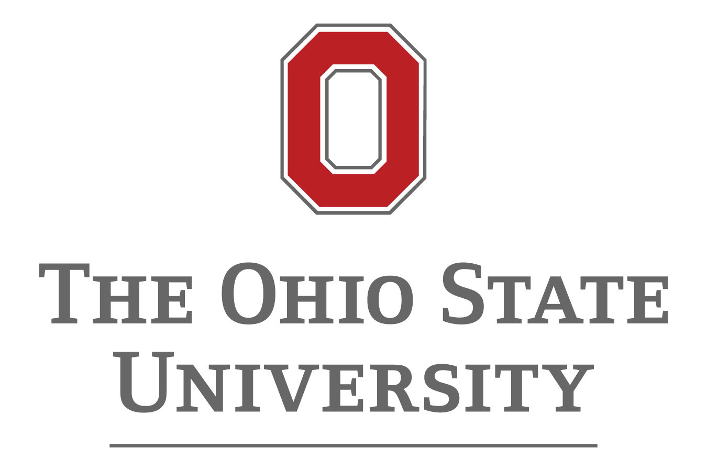

Research Focus & Expertise
CNRS Research Scientist with over 15 years of experience in fluid mechanics, specializing in near-wall turbulence, flow control (drag reduction, heat transfer enhancement), and computational fluid dynamics (DNS/LES). Expertise in analyzing large datasets using statistical methods and machine learning. International research experience at Imperial College London and Ohio State University, including supervision of Master's and PhD students. Focused on developing predictive models and innovative control strategies for turbulent flows with applications in aerospace and energy systems.
Contact Information
Name
Lionel Agostini
Location
Institut Pprime, CNRS UPR 3346
Dept. Fluides, Thermique, Combustion
Bâtiment H2 - SP2MI, TSA 41123
Poitiers, France
Phone
+33 (0)5 49 49 69 45
Education
Habilitation à diriger des recherches (HDR) - Fluid Mechanics
Defended on 25 November 2024Poitiers University 
Jury Members:
- Jacques Borée, Professeur, ENSMA, Laboratoire Pprime, Université de Poitiers
- Sergei I Chernyshenko, Professor of Aerodynamics, Department of Aeronautics, Imperial College London
- Laurent Cordier, Directeur de Recherche CNRS, Laboratoire Pprime, Université de Poitiers
- Nicholas Hutchins, Professor, Department of Mechanical Engineering, University of Melbourne
- Bérengère Podvin, Directrice de Recherche CNRS, Laboratoire EM2C, CentraleSupélec
- Jean-Christophe Robinet, Professeur, Laboratoire DynFluid, Arts et Métiers Institute of Technology
- Michael Leschziner, Professor of Aerodynamics, Department of Aeronautics, Imperial College London
PhD - Fluid Mechanics
2011IUSTI, Aix-Marseille University, Supersonic Research Group 
Thesis: "Unsteadiness in separated supersonic flow"
Honors: The highest honors (Distinction)
Research Master Degree (Master recherche) - Fluid dynamics, Aero-acoustics
2008Paris Sud University
Honors: Grade: Bien, Rank: 1/30
Bachelor degree (Licence) - Physics
2006Aix-Marseille University
Honors: Grade: Bien
Work Experience
Researcher (Chargé de Recherche CNRS)
October 2020 – PresentCNRS, Pprime institute - Fluids, Thermal and Combustion Department - CURIOSITY 
Responsibilities:
- Conducting research in fluid mechanics, particularly near-wall turbulence and flow control.
- Developing predictive models and innovative control strategies.
- Member of Evaluating Scientific Committee (CES 60) - University of Poitiers (Since 2021).
- Member of Pprime communication committee (Since 2020).
Research Associate
2019 – 2020Imperial College London, Department of Aeronautics 
Project Focus:
- Worked on "High-Fidelity LES/DNS Data for Innovative Turbulence Models."
- Supervisor: Prof. Peter Vincent.
- Funding: EU project - HIFI-TURB.
Research Associate
2016 – 2019Imperial College London, Department of Aeronautics 
Project Focus:
- Worked on "near-wall turbulence and drag reduction at high Reynolds number."
- Supervisor: Prof. Michael Leschziner.
- Funding: EU-China project DRAGY.
Research Associate
2014 – 2017Ohio State University, Department of Aeronautics 
Project Focus:
- Worked on "near-wall turbulence, shockwave /boundary layer interaction, jet."
- Supervisor: Prof. Datta Gaitonde.
- Funding: US Airforce.
- Joint supervisor for PhD candidates and Master graduate students (2014-2016).
Research Associate
2013 – 2014Imperial College London, Department of Aeronautics 
Project Focus:
- Worked on "Control of Görtler vortices."
- Supervisor: Dr. George Papadakis.
- Funding: EPSRC.
Research Associate
2012 – 2013Imperial College London, Department of Aeronautics 
Project Focus:
- Worked on "Drag reduction in turbulent channel flow by oscillatory spanwise motion."
- Supervisor: Prof. Michael Leschziner.
- Funding: EPSRC.
Research Associate
2011 – 2012IUSTI, Aix-Marseille University
Project Focus:
- Worked on "Unsteadiness in separated supersonic flow."
- Supervisor: Prof. Jean-Paul Dussauge.
- Funding: State grant.
- Teaching Associate at Ecole Polytech Universitaire de Marseille: Mathematics (differential equations, Fourier series, Multi-variable function), Experimental work (laminar/turbulent transition, centrifugal pumps, wave flume and open channel flow).
Skills & Expertise
Technical Skills
- Fluid Mechanics
- Compressible/Incompressible Flows
- Flow Control
- Turbulence
- Drag Reduction
- Heat Transfer
- Unsteady Separated Flows
- Direct Numerical Simulation (DNS)
- Large Eddy Simulation (LES)
- Machine Learning for Fluid Dynamics
- Reduced Order Modelling
Programming Languages
- Matlab
- Python
- Julia
- Tensorflow
- Keras
- Fortran
Professional Skills
- Research Leadership
- Project Management
- Grant Writing
- PhD Supervision
- International Collaboration
- Scientific Communication
Languages
- French: Mother tongue
- English: Fluent
Projects
ANR JCJC INFERENCE - Inference of reduced order models for turbulent flows with complex walls
2024 – 2028Role: Principal Investigator
Deepening understanding of near-wall turbulence at high Reynolds numbers, focusing on effects of external flow structures on skin friction and heat transfer, combining numerical simulations and data-driven methods.
Funding: 330 KEuros
ANR SOLAIRE - Machine learning for high temperature solar receivers
2022 – 2026Role: Co-supervisor of PhD student (Lou Guerin)
Improving the efficiency of concentrated solar power (CSP) plants by optimizing heat transfer in the solar receiver using active control of near-wall turbulence.
Partners: LISN, PROMES, Pprime
ANR MUFDD - Modelling Urban Flow Dynamics with Data-driven approaches
2023 – 2027Role: Researcher (Pprime's tasks: developing methods for estimators and ROMs)
Developing data-driven reduced-order models (ROMs) of urban canopy flow, combining data-based model identification and data assimilation methods.
Partners: LHEEA, IMFT, Pprime
Collaboration Pprime & KTH (EUR Intree) - Data-driven ROMs
2023 – 2026Role: Co-supervisor of PhD student (Niccolò Tonioni)
Developing a data-driven approach to identify key features governing flow dynamics and build low-dimensional surrogate dynamical models. Applied to flow behind a cylinder and turbulent boundary layer.
Enhancing Convective Heat Transfer by active control of secondary-flow instabilities
2023 – PresentRole: Lead/Collaborator
Collaboration with IUSTI and Safran Aircraft Engines to explore near-wall turbulence control using optimized plasma actuators to generate streamwise vortices by exploiting Görtler instabilities on concave surfaces, aiming to maximize heat transfer and minimize drag penalty in aircraft engine ducts.
Output: Patent 'Enveloppe SOLEAU' DSO2024001272 (23/01/2024)
Publications
Total Rank A Publications: 20
Total Publications: 23
Preferential Enhancement of Convective Heat Transfer Over Drag Via Near-Wall Turbulence Manipulation Using Spanwise Wall Oscillations
2024Authors: L. Guérin, C. Flageul, L. Cordier, S. Grieu, & L. Agostini
Venue: International Journal of Heat and Fluid Flow, 1010:109564
Catching up with missing particles
2024Authors: S. Atis & L. Agostini
Venue: Nature Machine Intelligence, 6
Auto-encoder-assisted analysis of amplitude and wavelength modulation of near-wall turbulence by outer large-scale structures in channel flow at friction Reynolds number of 5200
2022Authors: L. Agostini & M. A. Leschziner
Venue: Physics of Fluids, 34
Presentations
Breaking the Reynolds Analogy: Decoupling Turbulent Heat and Momentum Transport via Spanwise Wall Oscillation in Wall-Bounded Flow
April 2024 | Erlangen, GermanyAuthors: L. Guérin, C. Flageul, L. Cordier, S. Grieu, L. Agostini
Venue: DLES 14
Breaking the Reynolds Analogy: Decoupling Turbulent Heat and Momentum Transport via Spanwise Wall Oscillation in Wall-Bounded Flow
March 2024 | Madrid, SpainAuthors: L. Guérin, C. Flageul, L. Cordier, S. Grieu, L. Agostini
Venue: EUROMECH, COLLOQUIUM 631
A predictive model for the response of near-wall turbulence to outer structures
April 2023 | Budapest, HungaryAuthors: L. Agostini & M. A. Leschziner
Venue: ETC 15